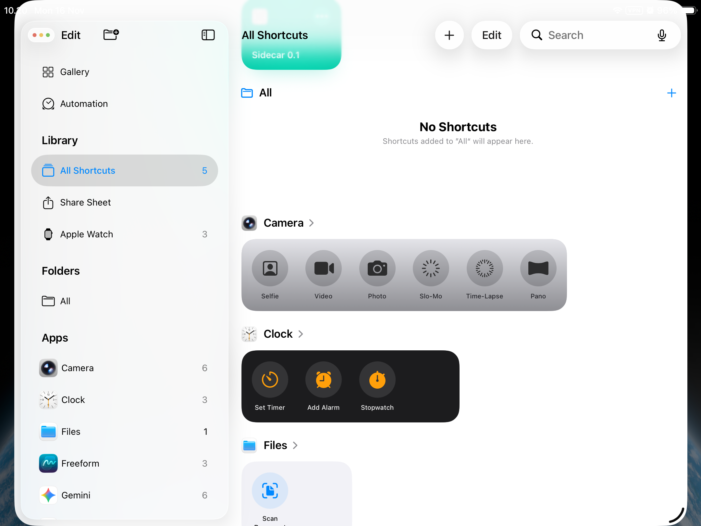
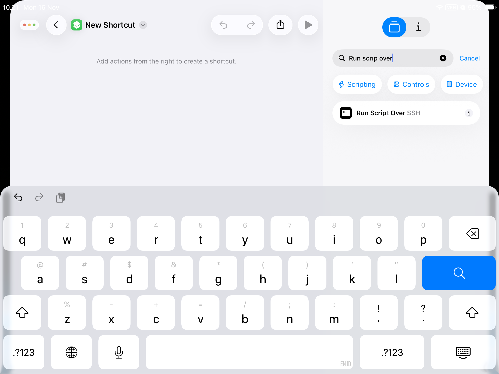
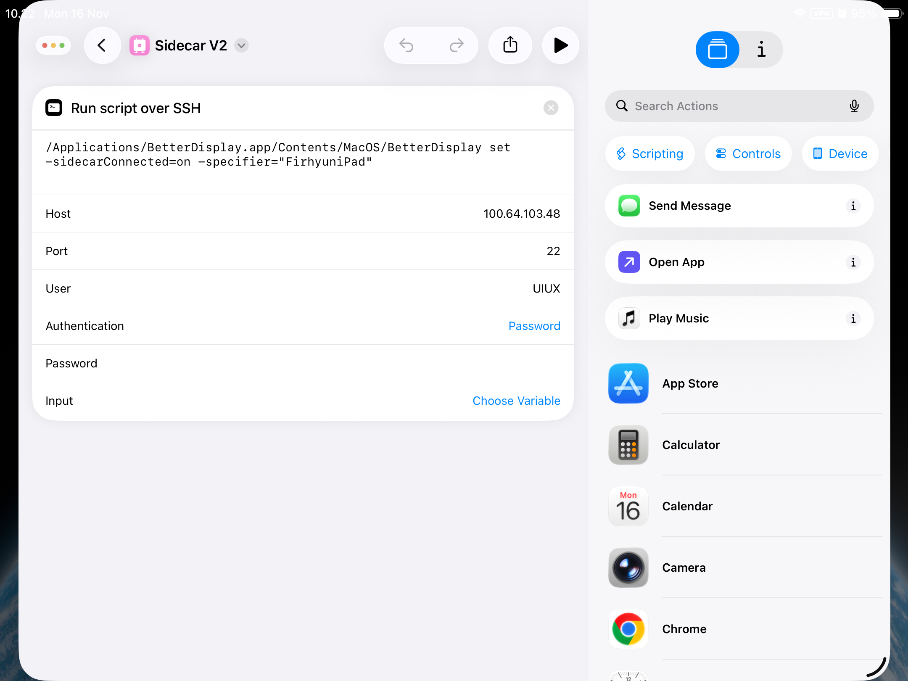
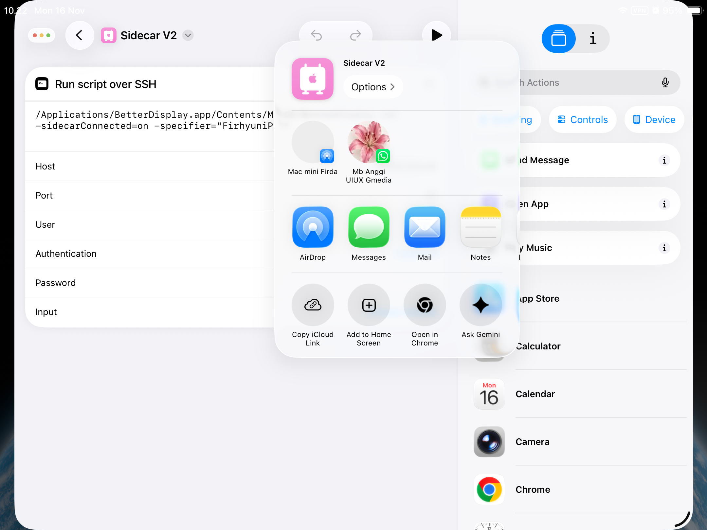
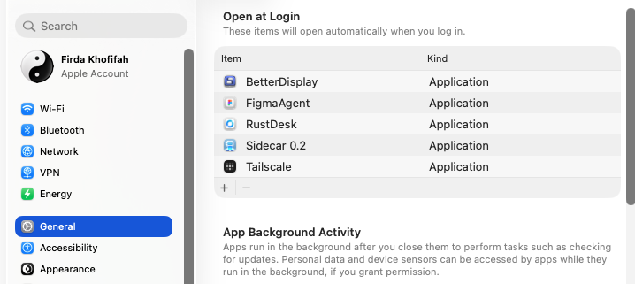

Mac mini.
Meet your iPad.
A practical setup guide for using an iPad 9 as the main working display for a Mac mini M4—first with Sidecar, then BetterDisplay, automation, SSH, and a one-tap Shortcut.
How to use this guide
Follow the chapters in order. Keep HDMI available during setup. Mark each chapter complete only after you have tested it successfully on your own devices.
Set up the safe starting point.
Begin with a normal HDMI display connected. Confirm the Mac and iPad meet the basic Sidecar requirements before changing display behavior.
Keep HDMI connected for initial setup
Use a regular monitor while installing, testing, and troubleshooting. Do not remove the fallback display yet.
Check Sidecar prerequisites
Confirm the Mac and iPad can use Sidecar and are configured appropriately for your environment. Complete a normal Sidecar test before continuing.
Prove Sidecar works manually.
Connect the iPad as a display first. This isolates Sidecar problems before BetterDisplay or automation enters the setup.
Connect through macOS Displays
Open System Settings → Displays and add the iPad as a Sidecar display. Confirm the iPad shows the Mac desktop.

Validate the connection
Move a window to the iPad and verify the connection is stable before proceeding.
Prepare the display layer.
Install BetterDisplay, create one Virtual Display, then identify and control the iPad Sidecar connection.
Create one Virtual Display
Install BetterDisplay and create a single Virtual Display for the headless setup. Keep the configuration simple while testing.

Find the iPad Sidecar name
Run the BetterDisplay CLI command below and note the exact iPad name returned.
/Applications/BetterDisplay.app/Contents/MacOS/BetterDisplay get -sidecarListConnect Sidecar from the CLI
Replace the placeholder with the exact iPad name from the previous step.
/Applications/BetterDisplay.app/Contents/MacOS/BetterDisplay set -sidecarConnected=on -specifier="NAMA_IPAD_ANDA"Turn a working setup into a routine.
Only automate after manual Sidecar and BetterDisplay control are reliable.
Prepare your automation
Create the reconnect workflow that launches after login, waits for the required display state, and reconnects Sidecar using your tested BetterDisplay command.
Add it as a Login Item
Use Automator or the chosen login workflow so the automation runs after macOS login. This does not bypass FileVault or the login screen.

Trigger the Mac from your iPad.
Enable Remote Login, verify SSH, then build an iPad Shortcut that runs the approved reconnect command or script.
Enable Remote Login
On the Mac, enable Remote Login for the intended user and test SSH before creating the Shortcut.

Create the iPad Shortcut
Use the Shortcuts action that runs a script over SSH. Keep private host/user values out of screenshots shared publicly.

Remove HDMI only after the tests pass.
Test wired and wireless behavior, restart/reconnect scenarios, and only then try using the Mac mini without the HDMI monitor.
Test the full flow
Confirm the iPad can reconnect, become the intended display, and recover after the scenarios you expect to use day to day.
- Manual Sidecar works.
- BetterDisplay command works.
- Login automation works after login.
- SSH Shortcut works.
- Wireless Sidecar is stable enough for your environment.
Try without HDMI
Once the fallback tests pass, disconnect HDMI and validate the complete workflow. Keep a recovery plan available in case Sidecar does not reconnect.
Troubleshooting
Start with the simplest layer. A failed automation is often a Sidecar or login-state problem underneath.